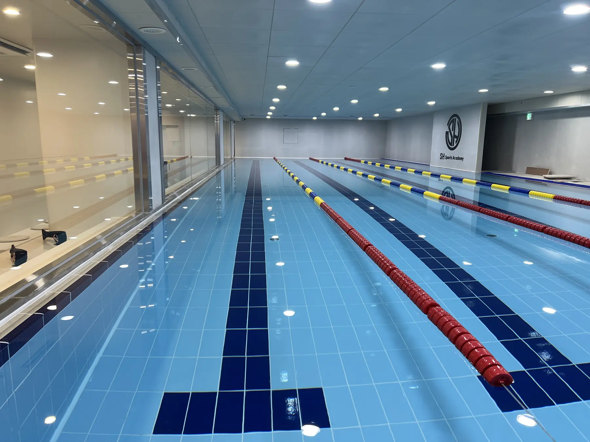

RaDX触媒技術
複合汚染物質に対応する触媒プラットフォーム
RaDXは、殺菌、臭気低減、重金属低減、スケール制御、難分解性物質処理など複数の機能を目標とします。食品加工水、産業排水、BLUE BOX反応モジュールに適用できます。
RaDX
Catalyst-based reaction platform
AQUACOM
Catalytic oxidation and media treatment
BLUE BOX
Mobile water infrastructure platform
Field Reference
RaDX 現場適用イメージ
食品加工水再利用、プール水質管理、現場条件に応じた水処理運用にBLUE N WATERの技術が適用される様子を示す現場事例画像です。

AQUACOM / RaDX Applied Site
食品加工水再利用、プール水質管理、現場条件に応じた水処理運用にBLUE N WATERの技術が適用される様子を示す現場事例画像です。


